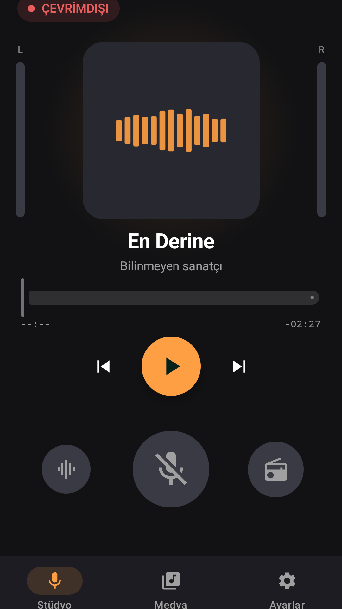
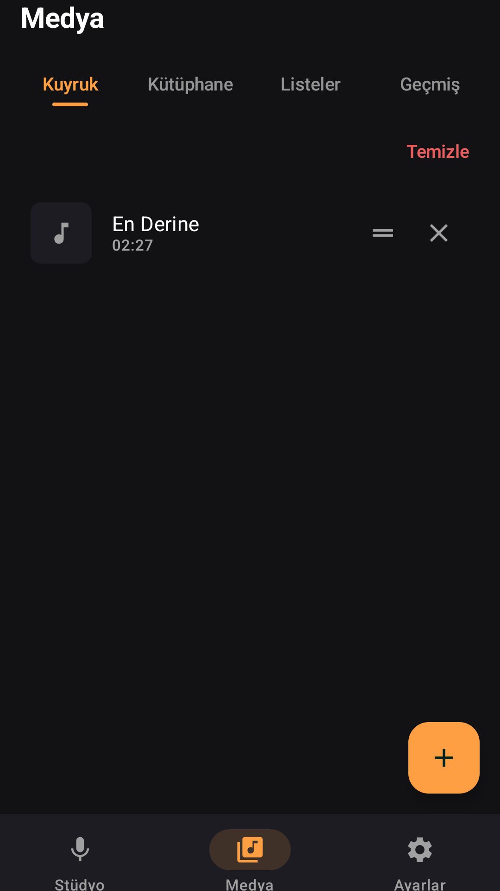
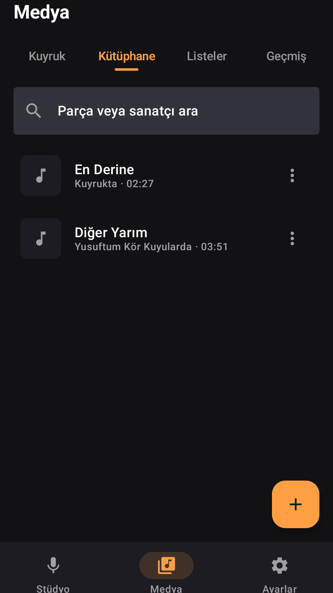
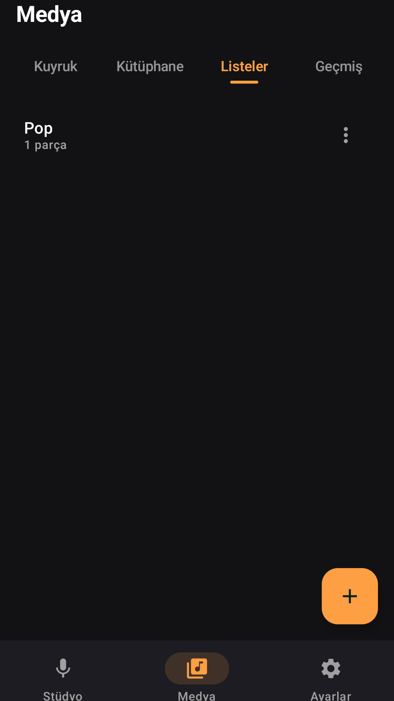
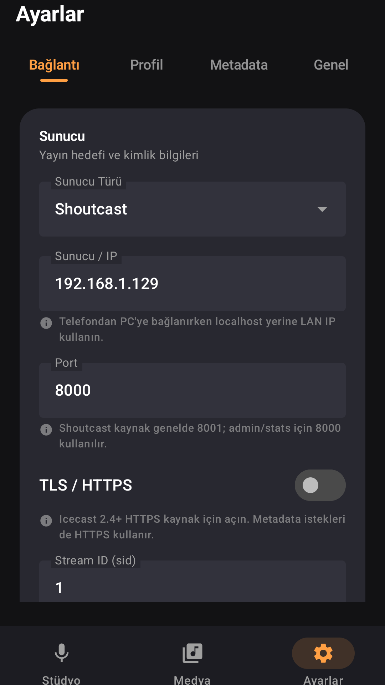
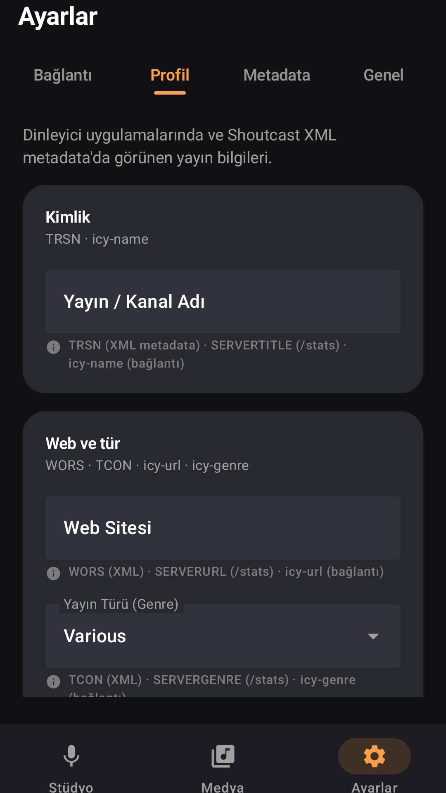
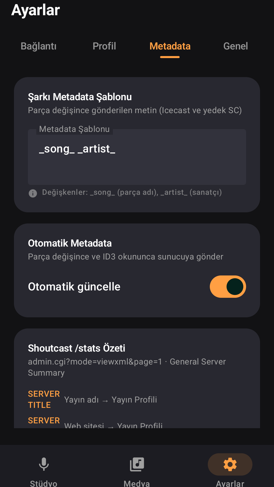
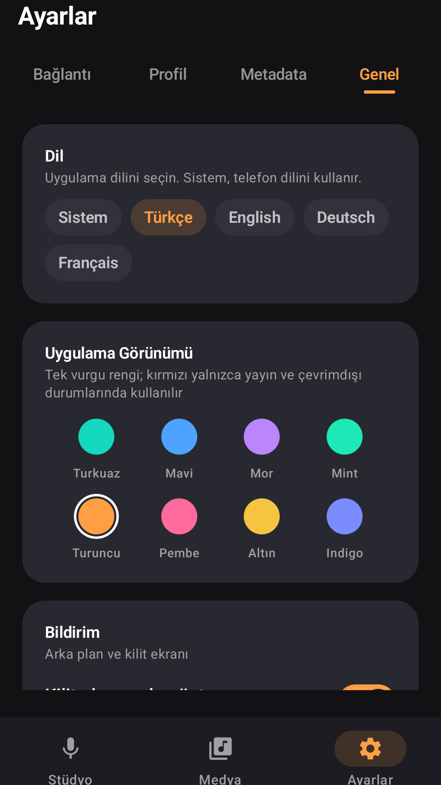

Canlı yayın
Icecast ve Shoutcast sunucularına bağlanın. TLS, çoklu hedef, otomatik metadata ve yeniden bağlanma desteklenir.
Yayın stüdyosu
MP3 kütüphanenizi yönetin, kuyruğu ve isimli listeleri kurun, mikrofonu mikserle harmanlayın. Radyo DJ, canlı yayın için tasarlanmış koyu temalı bir stüdyo uygulamasıdır.

Icecast ve Shoutcast sunucularına bağlanın. TLS, çoklu hedef, otomatik metadata ve yeniden bağlanma desteklenir.
Deck, mikrofon ve master fader’lar. Mikrofon açıkken müzik otomatik kısılır.
Dosya veya klasörden MP3 ekleyin. Kuyruğu sıralayın veya tek dokunuşla temizleyin.
Slow, Pop, Arabesk gibi setler oluşturun; listeyi kuyruğa yükleyin veya ekleyin.
Google Play için 9:16 telefon görselleri. Ham kareler assets/screenshots/raw klasöründe; Play Console JPEG’leri play-store/phone-screenshots içindedir.






